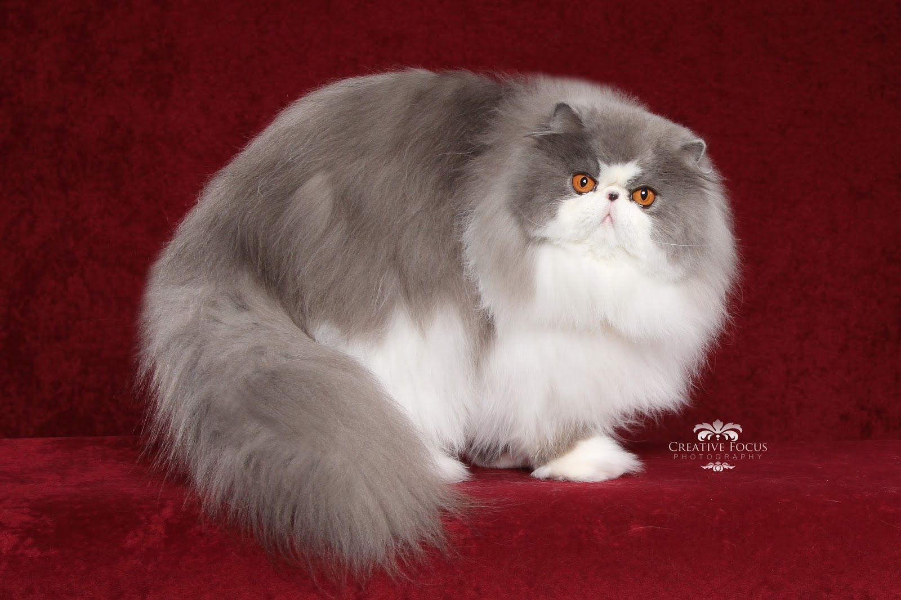
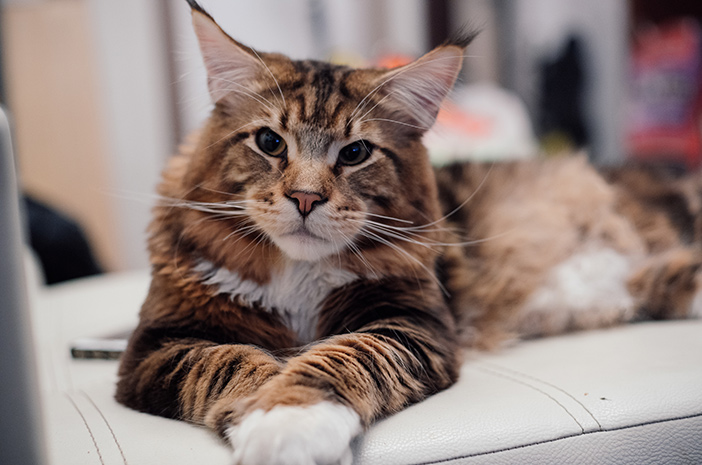
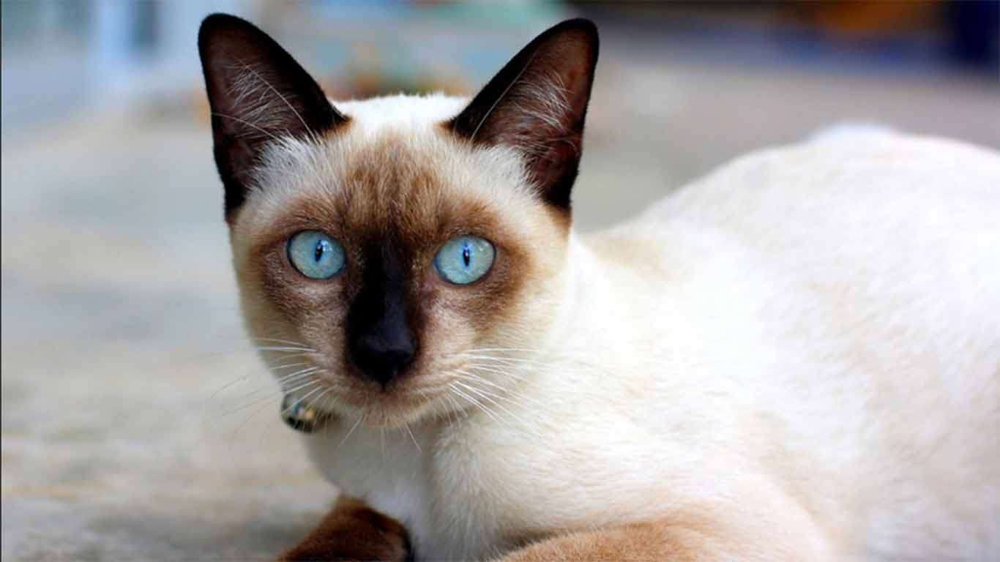
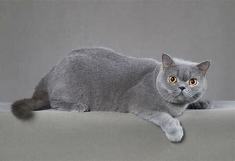
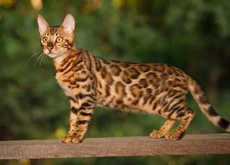

| Persia |
 |
Kucing dengan bulu panjang, hidung pesek, dan wajah pesek. Cenderung pendiam dan manja. |
| Maine Coon |
 |
Kucing berukuran besar dengan bulu tebal dan ekor berbulu lebat. Ramah dan aktif. |
| Siam |
 |
Kucing dengan bulu pendek, tubuh ramping, dan mata biru yang menonjol. Cerdas dan ramah. |
| British Short Hair |
 |
dikenal dengan bulu pendeknya yang tebal, badan yang kuat dan berotot, serta kepala yang besar dan bulat. |
| Bengal |
 |
salah satu ras kucing yang terkenal karena pola bulu mereka yang eksotis dan penampilan yang mirip dengan kucing liar, seperti leopard kecil. |